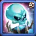
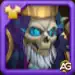
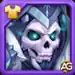
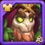
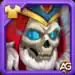
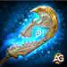

The ground trembles as Corvus marches forward - a king who refused to stay dead. In this ultimate guide, we'll show you how to harness his dark powers to crush your enemies and dominate the battlefield.
Discover why top players fear facing Corvus teams and how his unique abilities can counter even the most powerful meta compositions in Hero Wars: Dominion Era.
Corvus Guide - Hero Wars: Dominion Era, a game developed by Nexters.
Who Is Corvus?
Death was only the beginning for Corvus, the resurrected monarch who now stands as one of Hero Wars' most formidable tanks. With bone-chilling power and unbreakable resolve, this Undead King commands the battlefield with devastating area attacks and team-wide buffs that will make your enemies wish they'd never crossed into Graven territory.
Class: Undead
Position: Frontline Tank
Main Stat: Strength
Imagine a hero so powerful that not even death could stop him - that's Corvus. Resurrected by his daughter Morrigan, this fallen king brings more than just terrifying stats to your team; he brings an entire undead synergy that can turn the tide of any battle.
In this complete guide, we'll reveal why Corvus is feared across the Dominion, how to maximize his altar's devastating area damage, and which hero combinations make him truly unstoppable. Whether you're facing resurrection teams or building an undead legion, Corvus is your key to victory.
Corvus Pros and Cons - Hero Wars: Web and Facebook
✅ Pros
Unmatched Tankiness: With one of the highest health pools in the game (1,066,327 at max) and strong armor (55,166), Corvus can absorb tremendous damage.
Altar of Souls: His unique altar deals pure damage (scaling with health) whenever allies are hit, creating constant pressure.
Team Synergy: Provides +25% physical/magic attack to undead allies (Morrigan, Phobos, Keira) through Unity of the Damned.
Defense Reduction: Strike of the Damned lowers enemy frontline armor/magic defense by (10% Phys. atk + Level × 25).
Self-Sustaining: Default skin gives +54,500 health and +1,365 physical attack through strength conversion.
Versatile Artifacts: Weapon artifact provides team-wide buffs +50,190 armor when using ultimate.
❌ Cons
Undead Dependency: Many skills (like Unity of the Damned) only benefit undead allies, limiting team options.
Magic Defense: While decent (50,105), it's his weakest defensive stat against mages like Orion or Satori.
Position-Sensitive: As frontline tank, vulnerable to armor penetration (e.g., K'arkh) and control effects.
Pet Reliance: Needs Oliver (for healing) or Albus (for damage) to maximize potential.
Slow Ramp-Up: Altar requires time to deal significant damage; weak against burst teams.
Resource Intensive: Requires 55,410 skin stones to max winter/spring skins and 30,825 for default.
Platform-Specific Notes:
Web vs. Facebook: Performance is identical across platforms, but Facebook version may have slightly slower skill animations during high graphic settings.
Corvus Skills Upgrade Priority - Hero Wars: Dominion Era
Learn which of Corvus' undead abilities to upgrade first, with exact damage formulas to help you maximize his terrifying potential.
1. Strike of the Damned
Corvus smashes enemy frontline, reducing all their defenses. Each Undead ally makes this 10% stronger.
Evolution Priority:High – This is Corvus' main offensive skill. The defense reduction helps your entire team deal more damage, especially against tanks. Upgrade this early as it scales well with both Physical Attack and Hero Level.
Strike of the Damned Skill, Hero Wars Dominion Era.
2. Unity of the Damned
Corvus boosts attack power for all Undead allies (like Morrigan, Lyria, Phobos) for 10 seconds.
Evolution Priority:Medium High – Only valuable if you have other Undead heroes. The bonus scales with Physical Attack, so upgrade this if running an Undead team, otherwise prioritize other skills.
Unity of the Damned Skill, Hero Wars Dominion Era.

3. Altar of Souls
Summons an altar that damages enemies whenever they attack your team. The altar's strength depends on Corvus' health.
Damage Formula: (1.2% Health + Level × 10 + 10)
Health Formula: (90% Health + Level × 200 + 4000)
Evolution Priority:Very High – Corvus' most powerful skill. The altar scales with his massive Health pool, dealing damage while protecting your team. Always max this first as it makes Corvus both tankier and more dangerous.
Altar of Souls Skill, Hero Wars Dominion Era.
4. Royal Defense
When an ally falls below 20% health, Corvus pulls them to safety (8 second cooldown).
No damage formula - this is a positioning effect that doesn't scale with stats.
Evolution Priority:Medium – While potentially life-saving, this only triggers when allies are nearly dead and has a long cooldown. Upgrade last as it doesn't improve with levels or stats.
Royal Defense Skill, Hero Wars Dominion Era.
Best Patronage for Corvus
Discover which pets maximize Corvus' undead potential, enhancing his altar damage and tanking capabilities in battle.
Oliver The best pet for Corvus because it directly enhances his survivability. Oliver's healing when health drops below 50% synergizes perfectly with Corvus' tank role. The bonus Health and Armor stats from patronage make Corvus even harder to kill, which directly strengthens his Altar of Souls (since altar damage scales with health).
Albus A strong alternative that boosts Corvus' Altar damage directly. Albus increases Pure damage (which the altar deals) and provides Physical Attack bonus (which enhances Strike of the Damned). While excellent for offense, it doesn't provide the defensive benefits Corvus needs as a frontline tank.
Biscuit The least optimal choice for Corvus. While the Magic Attack and Armor stats are useful, the healing reduction effect isn't as valuable for Corvus compared to other pets. Corvus benefits more from direct survival or damage boosts than countering enemy healers.
Best Skin for Corvus Hero Wars: Dominion Era
Maximize Corvus' undead potential with this skin priority guide, focusing on stats that boost his tanking and damage capabilities.

Default Skin
Stats gain: Strength +1,365
- Health from Strength: +54,500
- Physical Attack from Strength: +1,365
Evolution Priority:Very High – The best all-around skin for Corvus. Strength boosts both his health (making him tankier and increasing Altar damage) and physical attack (enhancing Strike of the Damned).
Total of Strength Skin Stone for max level:
30,825

Winter Skin
Stats gain: Armor +10,650
Evolution Priority:High – Massive armor boost makes Corvus nearly unkillable against physical teams. Essential for countering popular physical damage dealers like K'arkh or Yasmine.
Total of Strength Skin Stone for max level:
55,410
Note: This skin can only be acquired during the Winter skins event.
Dark Depths Skin
Stats gain: Physical Attack +7,095
Evolution Priority:Medium High – Significant damage boost for Strike of the Damned, but doesn't improve survivability. Prioritize after defensive skins unless running pure damage setup.
Total of Strength Skin Stone for max level:
55,410

Spring Skin
Stats gain: Physical Attack +7,095
Evolution Priority:Medium High – Identical to Dark Depths skin. Only upgrade if you need more damage after maxing Winter skin and default skin.
Total of Strength Skin Stone for max level:
55,410

Lunar Skin
Stats gain: Magic Defense +10,650
Evolution Priority:Medium – Only valuable against magic-heavy teams. Corvus already has high natural Magic Defense, making this less essential than armor skins.
Total of Strength Skin Stone for max level:
55,410
Corvus Artifact Evolution Priority Hero Wars: Dominion Era
Optimize Corvus' undead might by focusing on artifacts that enhance his tanking and team support capabilities first.

Weapon Artifact: Undead King's Glaive
Stats gain: Armor +50,190
Activates with ultimate skill, providing team-wide stat bonuses for 9 seconds
Evolution Priority:Very High – This should be your absolute priority. The massive armor boost makes Corvus incredibly durable, and the team-wide buff synergizes perfectly with his tank role. The activation on ultimate means it works frequently in battles.
Book Artifact: Defender's Covenant
Stats gain: Armor +12,546 | Magic Defense +12,546
Evolution Priority:Medium – While the balanced defenses are nice, they're less impactful than the weapon and ring. Focus on this last, unless you're specifically facing mixed damage teams.
Ring Artifact
Stats gain: Strength +6,249
- Health from Strength: +249,960
- Physical Attack from Strength: +6,249
Evolution Priority:High – The strength conversion gives Corvus both tremendous health (boosting his Altar damage) and physical attack (enhancing Strike of the Damned). Upgrade this immediately after the weapon.
Corvus Glyph Evolution Priority
Optimize your Undead King's performance by focusing on glyphs that enhance his tanking and damage output in battle.
1st Glyph - Physical Attack
Stats gain: Physical Attack +4,340
Evolution Priority:Medium – While this boosts Strike of the Damned damage, Corvus is primarily a tank. Upgrade after defensive glyphs unless running an offensive undead team composition.
2nd Glyph - Health
Stats gain: Health +62,200
Evolution Priority:Very High – The absolute priority. Health increases Corvus' survivability AND boosts his Altar of Souls damage (which scales with health). Always max this first.
3rd Glyph - Armor
Stats gain: Armor +6,500
Evolution Priority:High – Essential against physical damage teams. The armor makes Corvus significantly more durable against popular physical damage dealers.
4th Glyph - Magic Defense
Stats gain: Magic Defense +6,500
Evolution Priority:Low – Corvus already has strong natural Magic Defense. Only upgrade when specifically facing multiple magic damage dealers.
5th Glyph - Strength
Stats gain: Strength +1,135
- Health from Strength: +45,400
- Physical Attack from Strength: +1,135
Evolution Priority:Medium High – Provides both health (for tanking) and physical attack (for damage). Upgrade after Health and Armor glyphs are maxed.
How to Counter Corvus in Hero Wars Dominion Era
Discover the most effective heroes and strategies to defeat the Undead King by exploiting his weaknesses and countering his abilities.
Why it works: Dante's Shackles of Weakness reduces Corvus' main stat (Strength) by 7,022 (scaling with physical attack) for 5 seconds when hit by his spears. This directly weakens Corvus' health pool (reducing Altar damage) and physical attack (weakening Strike of the Damned). The stat reduction makes Corvus significantly less threatening.
Dorian
Why it works: Dorian's Vampiric Aura provides constant healing to nearby allies, countering the pure damage from Corvus' Altar of Souls. Position damage dealers within Dorian's aura range to keep them alive through the altar's persistent damage. The healing offsets Corvus' steady damage output.
Fafnir
Why it works: Fafnir's starting shield (prioritizing agility heroes) protects your team from Corvus' initial Altar damage. The shield absorbs Max 248,215 damage (scaling with physical attack) and helps sustain through Corvus' persistent damage. This gives your team time to eliminate Corvus first.
Why it works: Julius' Defense Matrix absorbs all incoming damage (320,025 capacity) at battle start, nullifying Corvus' early Altar damage. After the matrix breaks, the team heal (57,429) counters residual damage. This gives your team a crucial time window to focus down Corvus before his altar becomes overwhelming.
Corvus Best War Flag - Hero Wars
Discover which War Flags maximize Corvus' undead potential, enhancing his tanking and team support capabilities in battle.
War Flag of Fervor:
Corvus and Team Benefit: The 10% increased Energy Gain for Tanks allows Corvus to activate his ultimate (and consequently his weapon artifact buff) more frequently. This synergizes perfectly with his role as main tank and team buffer.
War Flag of Decline:
Corvus and Team Benefit: The 10% healing reduction counters enemy sustain teams, making Corvus' Altar of Souls more lethal against heal-reliant compositions. Particularly effective against teams with Dorian or Martha.
War Flag of Swift Warriors:
Corvus and Team Benefit: While Corvus isn't a Warrior, this flag benefits undead warrior allies like Keira (when in undead form) or Ishmael in mixed teams. Only recommended if running such compositions.
Best Teams for Corvus - Hero Wars: Dominion Era
Top Defense Teams for Corvus
#
Table: Best Defense Teams for Corvus
Corvus, Mushy, Dante, Aidan, Khorus
Corvus, Lyria, Dante, Aidan, Khorus
Corvus, Lyria, Yasmine, Dante, Sebastian, Khorus
Corvus, Lyria, Keira, Dante, Morrigan, Axel
Corvus, Dante, Isaac, Sebastian, Martha, Axel
Top Attack Teams for Corvus
#
Table: Best Attack Teams for Corvus
Khorus, Aidan, Dante, Mushy, Corvus
Khorus, Aidan, Dante, Lyria, Corvus
Khorus, Sebastian, Dante, Yasmine, Lyria, Corvus
Axel, Morrigan, Keira, Dante, Lyria, Corvus
Axel, Martha, Sebastian, Isaac, Dante, Corvus
About the Author
Alexandre Domingos holds a postgraduate degree in Engineering and works as a Production Supervisor. In his spare time, he explores the gaming world as a YouTuber and blogger at Alexandre Games, combining his passion for technology and strategy. He has been immersed in gaming since the age of 5, starting on classic platforms like MSX, Master System, Nintendo, and even an old 286 PC.
Did you like our Corvus Guide for Hero Wars Web and Facebook? Is there something you didn't understand or would like to suggest changes to? We invite you to join our comment section on the Alexandre Games Blog page. Feel free to express your opinion, clarify your doubts, and share your suggestions. Click the button below to get started:


 30,825
30,825